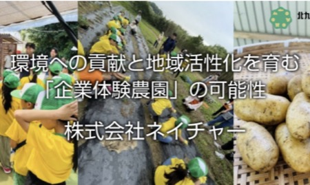
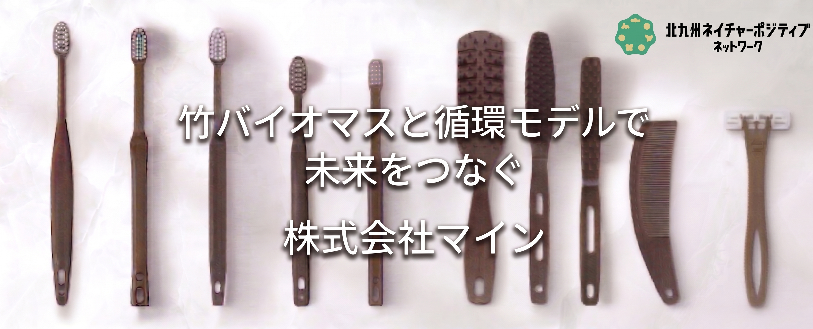

活動紹介
ネットワーク会員によるネイチャーポジティブの実践事例
ネットワーク会員によるネイチャーポジティブの実践事例
北九州ネイチャーポジティブネットワークの会員企業・団体が取り組むネイチャーポジティブ（NP）の実践事例をご紹介します。業種や規模を問わず、それぞれの強みを活かした多様な取組が進んでいます。

響灘ビオトープで絶滅危惧種のコアジサシの営巣環境を整備。社有林の保全や環境教育とあわせ、脱炭素と生物多様性保全を両立する地域共生モデルを実践。

地元農家が育てた酒米と皿倉山系の地下水を活かした酒づくりを通じて、地域農業の持続と水田が持つ生物多様性を守る循環を実践。

専門家による水生生物調査や環境学習講座を通じて、日本最大級の湿地・響灘ビオトープにおける希少種の保全を支援。

農業体験を通じて自然との共生を育む体験農園を運営。イオン九州との協創で子どもたちへの食育・環境教育にも貢献。

放置竹林を資源として活用し、宿泊施設向けアメニティの製造・販売からリサイクルまでを一貫して行う循環モデルを構築。